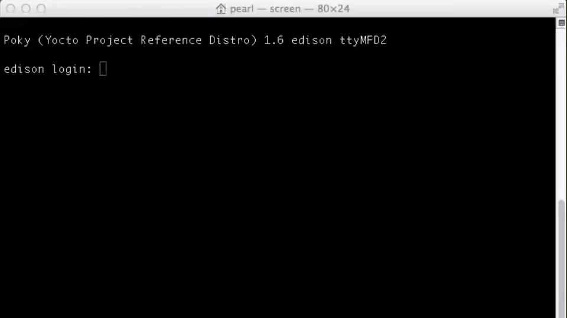

Identify the IP address
Once your Intel® Edison is online, identify the IP address using the configure_edison --showWiFiIP or ip a commands in order to: manually add an IP to an Intel® IoT Developer Kit IDE, use with SSH clients, or use your IoT device as a web server.

-
Establish a serial connection to the Intel® Edison.
Don’t know how? Refer to Shell Access.
-
In newer versions of the Intel® Edison firmware you can use the
configure_edisoncommand with the--showWiFiIPflag.configure_edison --showWiFiIP -
If the
--showWiFiIPflag is not available to you, use theip acommand to output details of your network connection.ip a -
It should be listed as “wlan0”, inside the third listed entry.
In this example, the IP address is “192.168.1.14”. The number after the slash (“24”) is the netmask (which we do not have to worry about here).
Do not see an IP address in the “wlan0” entry?
Your Intel® Edison is not online via Wi-Fi. You may need to re-run the steps in Connect to a Wi-Fi network.